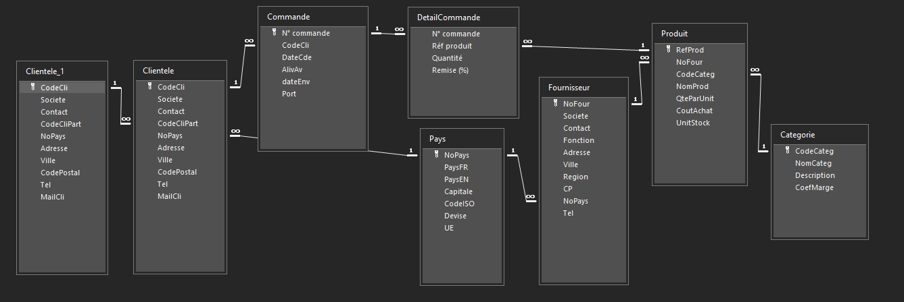

Présentation de la base de données
Cette partie présente les différentes tables utilisées dans notre projet ainsi que les informations qu'elles contiennent.
Les tables
La base de données KDou est organisée en plusieurs tables. Chaque table regroupe des informations sur un élément précis. La première information indiquée pour chaque table correspond à sa clé principale.
| Nom de la table | Informations contenues | Clé principale |
|---|---|---|
| Pays | NoPays, PaysFR, PaysEN, Capitale, CodeISO, Devise, UE | NoPays |
| Fournisseur | NoFour, Societe, Contact, Fonction, Adresse, Ville, Region, CP, NoPays, Tel | NoFour |
| Produit | RefProd, NoFour, CodeCateg, NomProd, QteParUnit, CoutAchat, UnitStock | RefProd |
| Categorie | CodeCateg, NomCateg, Description, CoefMarge | CodeCateg |
| DetailCommande | N°Commande, Réf Produit, Quantité, Remise (%) | N°Commande + Réf Produit |
| Commande | N°Commande, CodeCli, DateCde, AlivAv, DateEnv, Port | N°Commande |
| Clientele | CodeCli, Societe, Contact, CodeCliPart, NoPays, Adresse, Ville, CodePostal, Tel, MailCli | CodeCli |
| Clientele_1 | CodeCli, Societe, Contact, CodeCliPart, NoPays, Adresse, Ville, CodePostal, Tel, MailCli | CodeCli |
Relations entre les tables
Les tables sont reliées entre elles grâce à des clés étrangères. Ces relations permettent notamment de relier les fournisseurs à leurs pays et à leurs produits, les produits à leurs catégories, ainsi que les commandes aux clients et aux détails des commandes.
